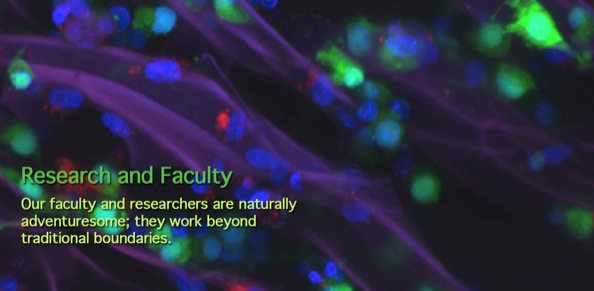

i-CTERM RESEARCHListing of the i-CTERM group by name and topic of research:
By Name
By Research Topic
Latest grants or findings:
Dr. Lelkes is one of the 2010 Coulter Grant recipent, together with Dr. Papazoglou and Prof. Weingarter (CoM) [read more]